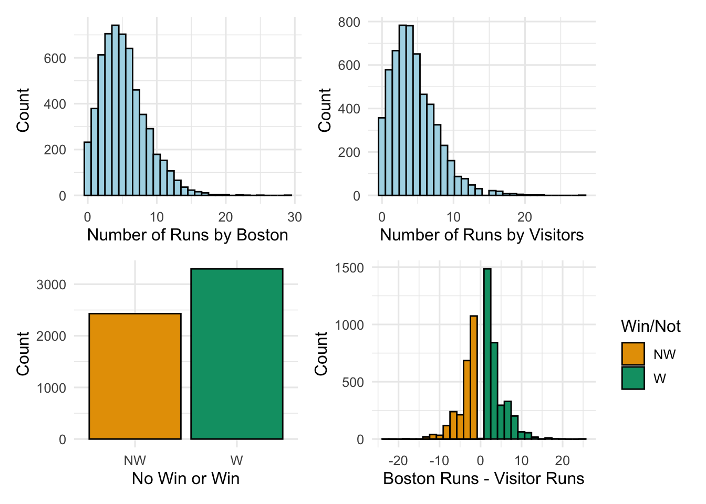
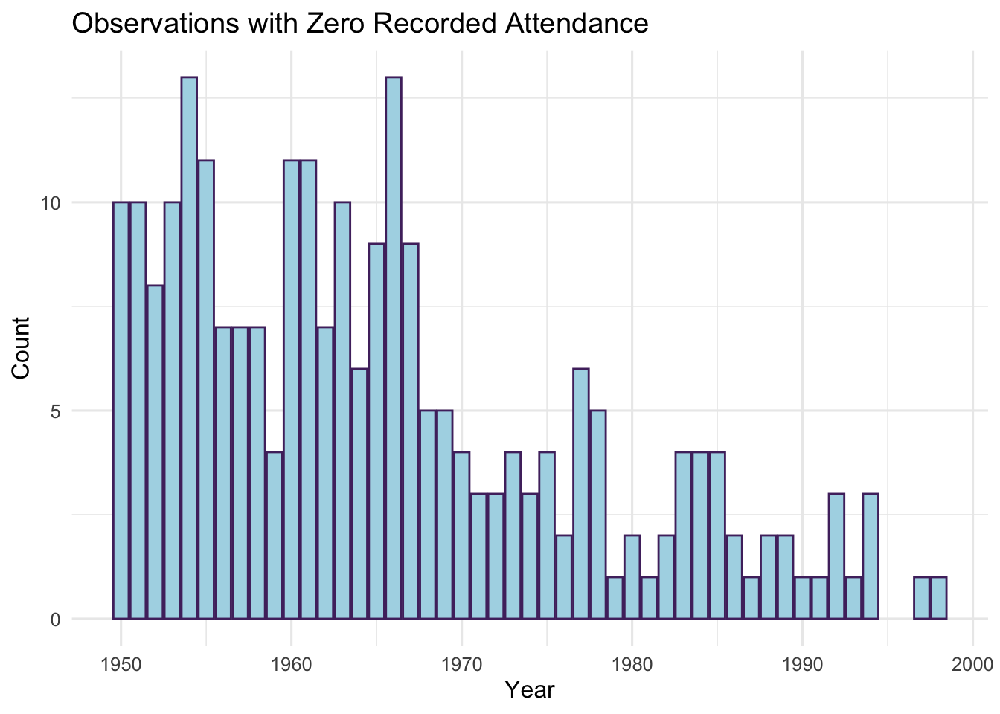

# load weather and game data for Boston boston_game_weather <-read_csv(bos_game_weather_html)# create separate columns with day, month, and year corresponding# to game dates; and create a binary win (1) or not (0) columnboston_game_weather <- boston_game_weather %>%mutate(year=year(date),month=month(date),day=day(date),wl_binary=ifelse(wl=="W",1,0))# load sports venue datapro_sports_venues <-read_csv(venues_html)# extract baseball parksbaseball_parks <- pro_sports_venues %>%filter(Sport =="MLB")# add info about open roofbaseball_parks$Open_Roof <-c("No",rep("Yes",9),"No","Yes","Yes","Yes","No","No",rep("Yes",7),"No","Yes","Yes","No","No","No","Yes")# load map data for US states minus AK and HIstates_df <-map_data("state") %>%filter(region !="alaska"| region !="hawaii")
Figure 1: The 30 MLB park locations and their open-air status. Darker shading indicates overlap of nearby parks.
Initial Research Question
We would like to know about the impact that climate or weather may have on MLB teams that play in open-air stadiums. Given that climate and weather patterns are changing and impacting many aspects of our society and lives, and given that many MLB parks are exposed to the elements for many months of the year, it could be that changing climate and weather conditions may impact MLB. In particular, we would like to know if changing climate and weather patterns might have an effect on either team performance or game attendance.
Figure 3: MLB park locations and open-air status with Fenway Park in Boston, MA highlighted.
The main part of this project combines data about home games played at Fenway Park with historical Boston area weather data in an attempt to assess if changing climate and weather conditions have impacted either team performance or game attendance at Fenway, with Fenway serving as an example of an open-air baseball stadium.
Data Collection and Documentation
To address our primary question, we collected and combined two sets of data. The first data set collected contains information about each home game played by the Boston Red Sox at Fenway Park. The second data set collected contains weather data such as in Boston over the available time frame of games at Fenway.
Team Data
To obtain the data on home games played by the Boston Red Sox at Fenway Park, we used the function get_retrosheet from the R package retrosheet to download game data for a specific year and team (Douglas and Scriven 2023). Then, we used a function team_games to iterate over all the years that the Red Sox played at Fenway Park, that is, 1912 - 2022 (skipping 2020 due to the COVID-19 pandemic). The code to accomplish this is in the team_home.R script available at our baseball_weather GitHub repository, view the GitHub repo.
The retrosheet package contains a collection of tools to import and structure the single-season event, game-log, roster, and schedule data available from the Retrosheet website which maintains play-by-play accounts of as many major league games as possible. The Retrosheet data we downloaded for the Boston Red Sox has a structure indicated by Table 1.
Table 1: A few rows of the Retrosheet data downloaded for the Boston Red Sox home games at Fenway Park.
date
dbl_hdr
hm_tm
vis_runs
hm_runs
attendance
duration
score_diff
wl
1912-04-20
0
BOS
6
7
24000
190
1
W
1912-04-23
0
BOS
6
2
2500
145
-4
NW
1912-04-24
0
BOS
5
2
2500
135
-3
NW
1912-04-25
0
BOS
1
4
3000
118
3
W
1912-04-26
0
BOS
6
7
10000
125
1
W
Each row corresponds to a single home game at Fenway. The columns of the data set specify for each game the date, whether the game is a double-header, the number of runs scored by the home team (Boston), the number of runs scored by the visiting team, the game attendance, the duration of the game in minutes, the difference between the home team score and the visiting team score, and whether Boston won (W) or did not win (NW).
The data set contains 8,634 rows or observations.
Weather Data
We used R package RNCEP to download climate and weather data for the Boston area (Kanamitsu 2002). This package simplifies the access, organization, and visualization of weather data from the NCEP/NCAR reanalysis and NCEP/DOE reanalysis II data sets. Specifically, we used the function NCEP.gather.surface to download data for the surface temperature (air.sig995), precipitation (rhum.sig995), and humidity (pr_wtr.eatm). See the documentation for RNCEP for more details and specifications of units used. The climate and weather data we downloaded for Boston has a structure indicated by Table 2.
Table 2: A few rows of the climate and weather data downloaded for Boston.
tempK
humid
precip
date
276.3125
63.3750
5.668751
1950-04-01
280.3000
81.0625
12.656252
1950-04-02
281.2875
79.4375
15.000000
1950-04-03
285.2188
92.1250
24.950001
1950-04-04
285.9813
93.6875
27.612501
1950-04-05
The data set contains 15,622 rows or observations. Note that the temperature, humidity, and precipitation values recorded are averaged daily and over a spatial region (between 41 and 42 degrees latitude and 289 and 290 degrees longitude). The code used to download the data is contained in the boston_weather_get.R script available our baseball_weather GitHub repository, view the GitHub repo.
Combined Weather and Game Data
In order to address our initial research question, we combined the Boston weather and home game data. It is important to emphasize the following:
Climate and weather data is only available starting in the 1950’s while Boston Red Sox home grame data goes back to 1912. Thus, we must restrict the home game data to those observations starting in the 1950’s.
The downloaded climate and weather data contains observations for many more days than just the days on which there were Red Sox home games. Thus, we must extract those climate and weather observatios corresponding to dates of games at Fenway.
The combined weather game data for the Boston Red Sox home games at Fenway Park has a structure indicated by Table 3.
Code
boston_game_weather %>%head(5) %>%kable()
Table 3: A few rows of the weather and game data for the Boston Red Sox home games at Fenway Park.
date
dbl_hdr
hm_tm
vis_runs
hm_runs
attendance
duration
score_diff
wl
tempK
humid
precip
tempF
year
month
day
wl_binary
1950-04-18
0
BOS
15
10
31822
208
-5
NW
284.8500
80.2500
18.29375
53.06000
1950
4
18
0
1950-04-19
1
BOS
3
6
25425
150
3
W
284.8813
85.9375
17.17500
53.11625
1950
4
19
1
1950-04-19
2
BOS
16
7
32860
190
-9
NW
284.8813
85.9375
17.17500
53.11625
1950
4
19
0
1950-04-28
0
BOS
1
4
5333
116
3
W
282.8500
90.5625
19.40625
49.46001
1950
4
28
1
1950-04-30
1
BOS
0
19
0
131
19
W
280.4438
85.3125
21.54375
45.12876
1950
4
30
1
This is our principal data set and it contains 5,727 rows.
Exploratory Results
The script boston_home_weather_eda.R contains the full exploratory analysis and all corresponding code.
Potential Response Variables
Figure 4 shows the distributions of runs scored by the Red Sox and the visiting team, as well as the number of games and the difference in scores between the Red Sox and visiting teams. The median number of runs for Boston is 5 while the median number of runs for visitors is 4.
Code
ra_1 <- boston_game_weather %>%ggplot(aes(x=hm_runs)) +geom_histogram(color="#512d6d",fill="lightblue") +xlab("Number of Runs by Boston") +ylab("Count")# Number of visitor runsra_2 <- boston_game_weather %>%ggplot(aes(x=vis_runs)) +geom_histogram(color="#512d6d",fill="lightblue") +xlab("Number of Runs by Visitors") +ylab("Count")# Boston runs - Visitor runsra_3 <- boston_game_weather %>%ggplot(aes(x=score_diff,fill=wl)) +geom_histogram(color="#512d6d") +scale_fill_manual(values =c("#E69F00","#009E73")) +labs(x ="Boston Runs - Visitor Runs",y ="Count",fill="Win/Not")# Win or Not Winra_4 <- boston_game_weather %>%ggplot(aes(x=wl,fill=wl)) +geom_bar(color="#512d6d") +scale_fill_manual(values =c("#E69F00","#009E73")) +theme(legend.position ="none") +labs(x ="No Win or Win",y ="Count")(ra_1 + ra_2) / (ra_4 + ra_3)

Figure 4: Exploratory plots for the distributions of Red Sox runs, visitor runs, score difference, and wins for Red Sox home games played at Fenway Park from 1950 to 2022 (excluding 2020).
We observe from Figure 4 that the Red Sox have won more games than they have lost and tend to win by a median of one run.
Figure 5 displays the distributions for the duration and attendance of Red Sox home games played at Fenway Park from 1950 to 2022 (excluding 2020). The median duration for a game is 170 minutes while the median attendance is around thirty thousand. Note that Fenway Park currently seats over 37,000 (“Fenway Park - Wikipedia — En.wikipedia.org”).
Figure 5: Exploratory plots for the distributions of game duration and attendance and Red Sox home games played at Fenway Park from 1950 to 2022 (excluding 2020).
One potentially important observation based on Figure 5 is that there are some Red Sox home games for which the recorded attendance is 0. Specifically, there are 243 such games. This value is determined using the following code:
boston_game_weather %>%filter(attendance ==0) %>%ggplot(aes(x=year)) +geom_bar(color="#512d6d",fill="lightblue") +labs(x="Year",y="Count",title="Observations with Zero Recorded Attendance")

Figure 6: The number of Red Sox home games by year with a recorded attendance of zero.
It’s not immediately clear why there may be a zero recorded for attendance at some games. This could be an error but further investigation is required to determine for certain. It might be necessary to remove those observations with zero attendance depending on what specific questions we decide to address with models.
Potential Predictor Variables
Our main interest in this project is to examine how climate and weather factors impact aspects of baseball games such as the score, outcome, duration, and attendance games. As previously noted, we have data about humidity, precipitable water2, and temperature for the Red Sox home games.
Figure 7: Exploratory plots for the climate and weather variables on dates of Red Sox home games played at Fenway Park from 1950 to 2022 (excluding 2020).
We see that the median temperature is about 65 degrees Fahrenheit, the median humidity is about 83 percent, and the median precipitable water is about 25 \(\frac{\text{kg}}{\text{m}^2}\).
Variable Relationships
We would like to determine what if any impact there has been on the score, outcome, duration, or attendance of Red Sox games over time by temperature, humidity, or precipitable water.
Wickham, Hadley, Romain François, Lionel Henry, Kirill Müller, and Davis Vaughan. 2023. Dplyr: A Grammar of Data Manipulation. https://CRAN.R-project.org/package=dplyr.
By “open-air” we mean permanently open with no option for roof cover. Stadiums with either a fixed or retractable roof are not considered to be open-air for our purposes.↩︎
Precipitable water is the amount of water potentially available in the atmosphere for precipitation, usually measured in a vertical column that extends from the Earth’s surface to the upper edge of the troposphere.↩︎